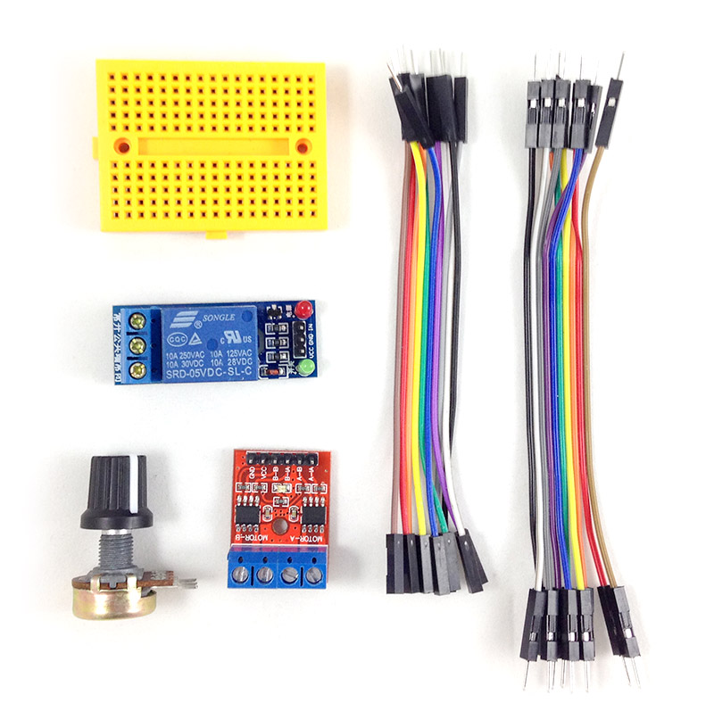

Webduino 擴充套件 M ( 支援馬克 1 號、Fly )
Webduino 擴充套件 M 是偏向動力驅動的零件組，內含繼電器、雙馬達驅動板以及可變電阻，透過繼電器，可以簡單改造許多家用電路的控制，透過馬達驅動板，可以輕鬆地把百元玩具車改造成無線網路遙控車，各種不同的玩具與家電改造，都可透過擴充套件 M 來實現！
售價：
新台幣 210 元整 ( 已含稅，原價 250 )
點選「立刻購買」，將會前往 Webduino 露天賣場，貨運可以選擇「超商貨到付款」、「郵局包裹」、「7-11 取貨」模式，購買前請先 閱讀購買須知以及退換貨說明，歡迎政府機關、教育單位或公司行號採購，採購相關資訊請 來信 或來電 07-3388511 洽詢。
產品內容：
- 1. 繼電器 x1
- 2. 雙馬達驅動板 x1
- 3. 可變電阻 x1
- 4. 170 孔麵包板 x1
- 5. 杜邦線 ( 公公 ) x10
- 6. 杜邦線 ( 公母 ) x10
產品照片：
